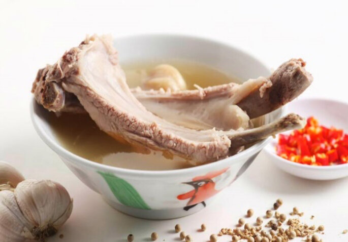

<-Back
Bak Kut Teh (Pork Bone Soup)

How to cook with pressure cooker
Ingredients (Serving for 4)
- 35g white pepper
- 5g black pepper
- 20 cloves of garlic
- 1kg of Pork Ribs
- 1.5L of water
- 1 teaspoon salt
Steps
- Rinse garlic under running water and then cut of the bottom of the clove/bulb. Then Crush it with the knife.
If using whole peppercorns, crush some of the peppercorns with mortar and pestle or any other way.
- Place a skillet over medium heat and toast peppercorn and garlic.
- Bring a pot of water to a boil and place the pork ribs inside for 1-2 minutes then remove. This is to clean the pork.
- Pour 1.5L of water into your pressure cooker. Add all the toasted garlic and pepper into the pot, as well as the salt. Set it to Meat & Stew,
under high pressure for 35 minutes and slow release the pressure.
- Add additional salt to taste. Serve with rice. For authentic experience, make add dark soy sauce to sliced chili padi as a sauce for the meat.